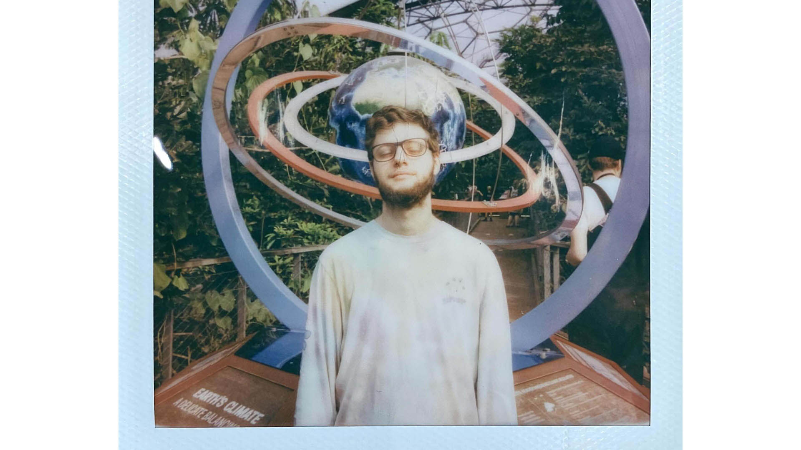
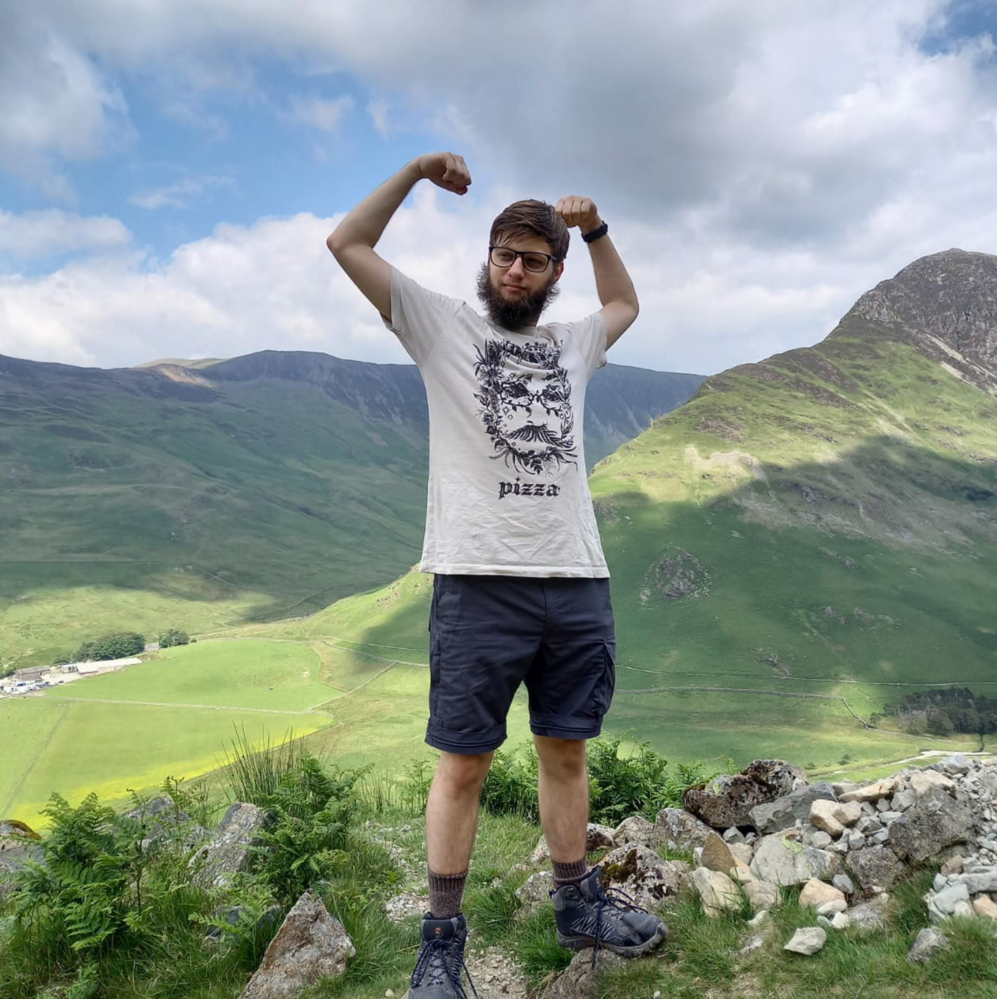

A glitched digital artwork of me I created in Photoshop using the Filter > Stylize > Wind functionality. I was wearing a tye dye long sleeved shirt in the original photo, so the result is a series of windswept colourful lines that loosely resemble a human figure (me!)
A upper body portrait photograph of me, a white, bearded male wearing glasses and a colourful tye dye t shirt from the brand Rip n Dip. I am against a plain white wall. I am facing to the left and have a slight smile
A photograph taken of me playing drums in the live room of Axe and Trap studios in Wells, UK. The studio has a really warm and homely feel to it; there are old instruments around, the colour scheme is fairly natural and uses lots of wood/old rugs/baffling to decorate and treat the room. I'm playing a 4 piece drum set with 2 crashes, a ride and a set of high hats. There are two microphones placed above the drums in the photo, and other mics placed over the kit.
A very posey photograph of me modelling merchandise for the indie record label I am signed to, Satori Records. I am a white male, with a beard, short hair and glasses and I am stood against a graffiti covered wall down a side street in Bristol. I look a little moody, but that's just me trying to pose seriously for a photograph. I am wearing a black t shirt with the Satori Records logo on it. The logo is the kanji characters for Satori, which translates to enlightenment in English.

This is a scan of a polaroid picture my friend Ben took of me while visiting the Eden Project. I wanted a spacey photograph to use for my music side project, Cosmic. I am a white male with a beard, short hair and glasses. I am stood in front of an outdoor solar system installation wearing my spacey tye dye shirt. I have my eyes closed, but this was accidental, as right at the last second, I started into a reflection of the sun, but Ben caught the photo before I looked like I was squinting, and instead, I look like I'm asleep with a smile.

A photograph taken of me hiking up Buttermere in the Lake District. I am a white male with a beard, short hair and glasses. I am stood with my arms in a strong muscle flexing position due to my accomplishment of getting halfway up a mountain. I'm wearing a t shirt with a forest-like drawing of the author John Green on and the word Pizza underneath. This is a t shirt from the yearly Pizzamas celebration in the Vlogbrothers community. In the background is a view out over the Lake District, featuring the sky and grassy mountains. I am stood on a rocky gravel and stone path.